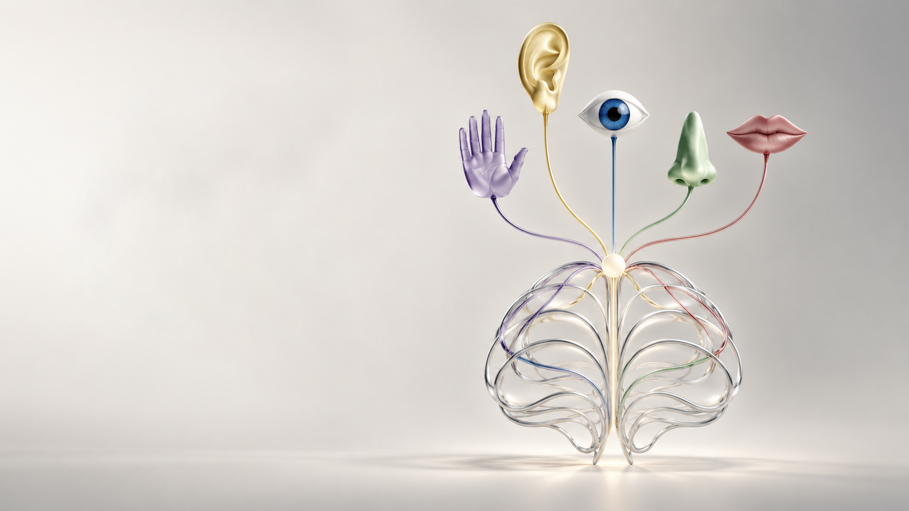
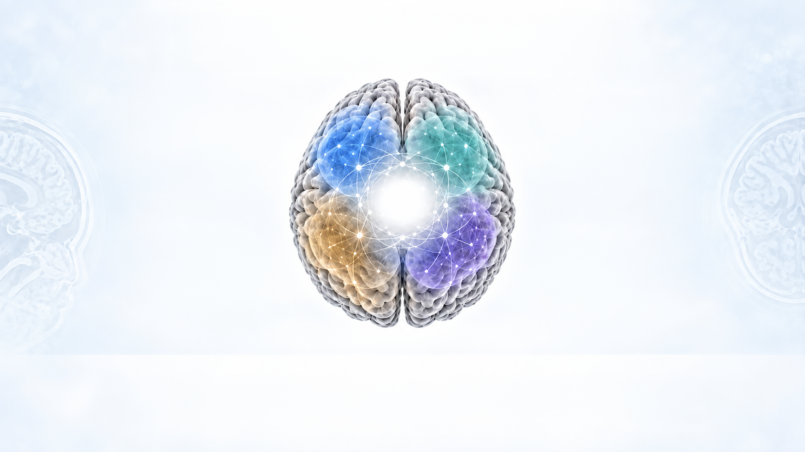
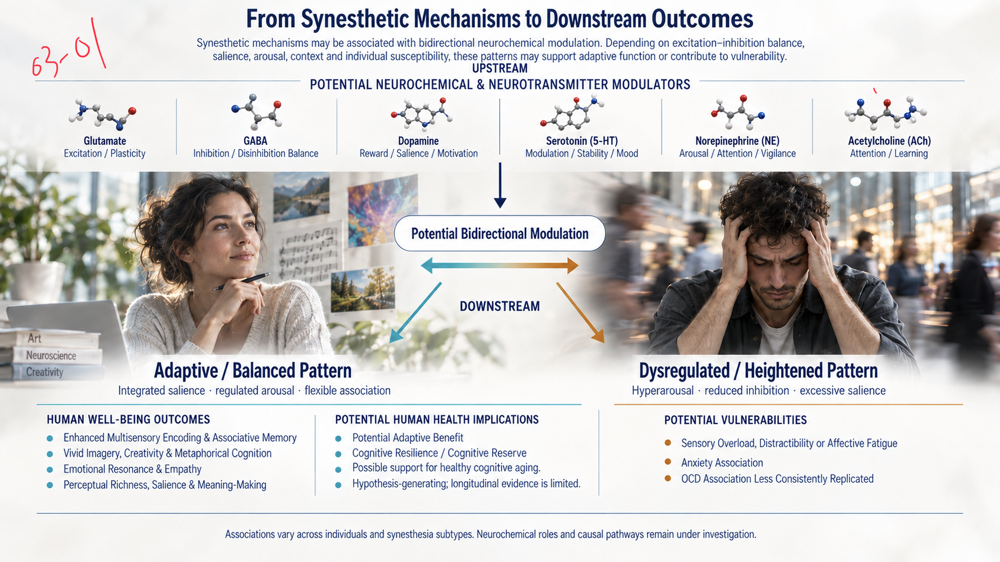
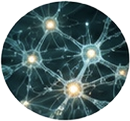
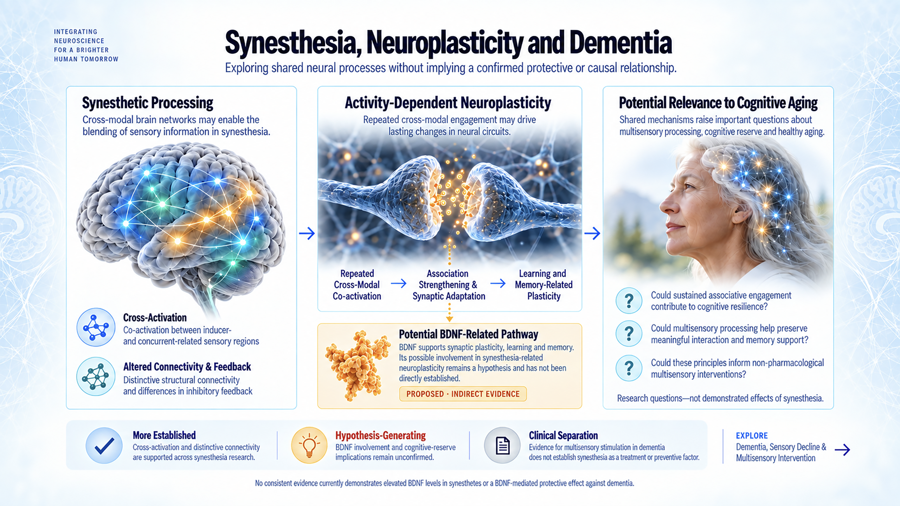
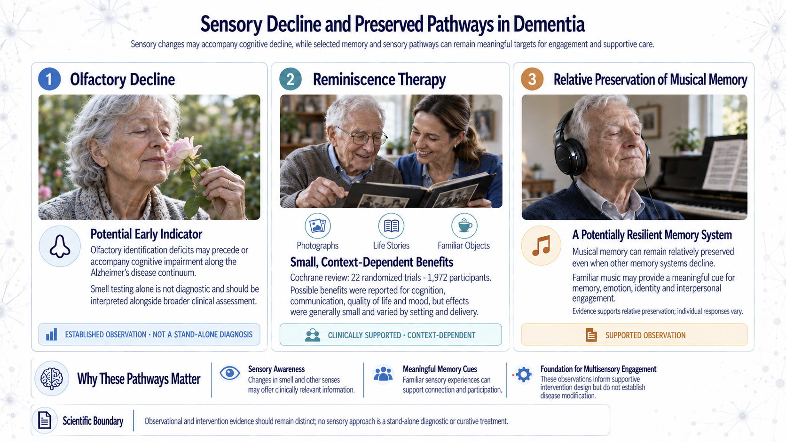
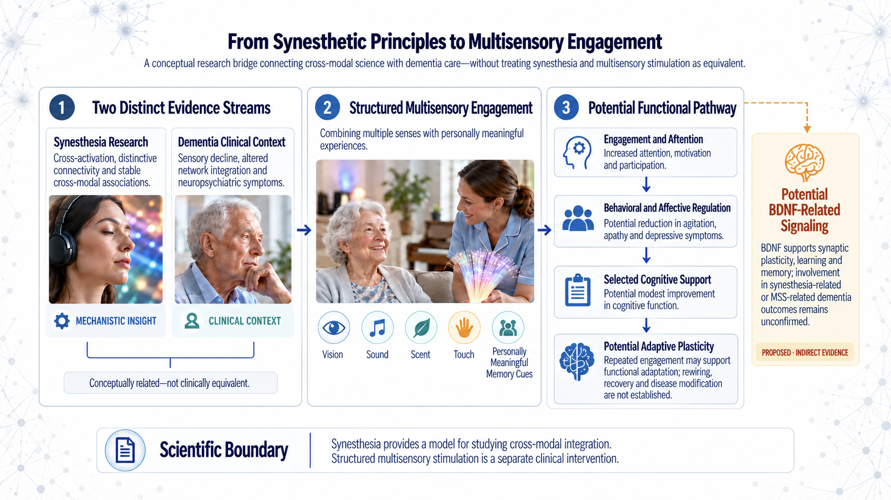
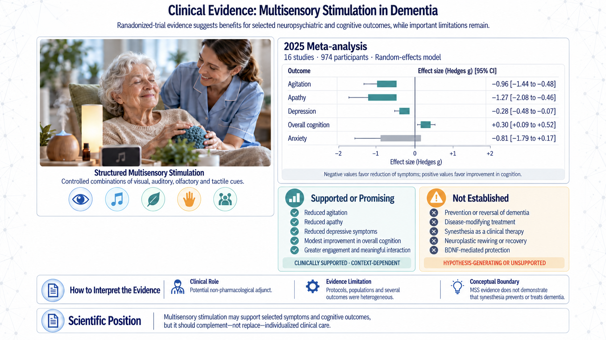

Sensory Convergence
Thalamus · Superior Temporal
Sulcus (STS) · Posterior Parietal
Cortex / Intraparietal Sulcus (IPS)
Integration, relay and
multisensory convergence

Synesthesia offers a distinctive window into how the brain connects scent, taste, touch, sound and vision. By studying these cross-sensory associations, A&S explores how multisensory integration may shape perception, emotional regulation, behavior, balance, resilience and everyday well-being.
Each sensory system begins through a distinct biological pathway. These signals do not remain isolated—they interact across cortical, subcortical and association networks to shape integrated perception.
Sensory SignalsRetina · LGN · V1
Cochlea · MGN · A1
Olfactory Epithelium · Olfactory Bulb · Piriform Cortex
Taste Buds · NTS · Insula
Skin & Body Receptors · Thalamus · S1/S2
Cross-modal integration coordinates sensory signals with attention, salience, memory, emotion and
meaning—transforming separate inputs into an integrated perception.

Thalamus · Superior Temporal
Sulcus (STS) · Posterior Parietal
Cortex / Intraparietal Sulcus (IPS)
Integration, relay and
multisensory convergence
Temporoparietal Junction (TPJ) ·
Anterior Cingulate Cortex (ACC)
Salience detection, reorientation
and conscious monitoring
Orbitofrontal Cortex (OFC) · Insula
Value, reward, interoception and
cross-modal meaning
Amygdala · Hippocampus
Emotional salience, binding and
episodic memory
Conceptual network view — not an anatomical localization map

Synesthetic mechanisms may be associated with bidirectional neurochemical modulation. Depending on excitation–inhibition balance,
salience, arousal, context and individual susceptibility, these patterns may support adaptive function or contribute to vulnerability.
Excitation / Plasticity
Inhibition / Disinhibition Balance
Reward / Salience / Motivation
Modulation / Stability / Mood
Arousal / Attention / Vigilance
Attention / Learning
Potential Bidirectional Modulation
DownstreamIntegrated salience · regulated arousal · flexible association
Hyperarousal · reduced inhibition · excessive salience
Associations vary across individuals and synesthesia subtypes. Neurochemical roles and causal pathways remain under investigation.
Synesthetic perception may reflect distinctive developmental connectivity and differences in cross-modal feedback and inhibition.
Repeated co-activation may stabilize selected associations and support ongoing network adaptation.
Axon guidance · Synapse formation ·
Developmental pruning
Sensory input during critical
developmental periods
Associative learning · Repeated
activation · Context
Retained or atypical cross-modal
connections · altered long-range
connectivity
Altered feedback · excitation–inhibition
balance · reduced top-down control
Automatic and consistent
inducer–concurrent associations
Repeated co-activation · association
strengthening · synaptic stabilization

Multisensory network remodeling ·
repeated recruitment · network-level
reorganization
Bidirectional Adaptation
Parietal Cortex · Hippocampus · Insula · Association Cortex · Occipitotemporal / V4-related Cortex · Prefrontal Cortex
Conceptual framework: proposed mechanisms are supported to different degrees across synesthesia subtypes
and should not be interpreted as a confirmed single causal sequence.
Synesthetic perception is associated with stable cross-modal binding and distinctive patterns of memory, imagery and flexible association. These functional characteristics may enrich cognition and meaning-making, while broader implications for resilience, cognitive reserve and healthy aging remain preliminary.
Enhanced performance in selected forms of synesthesia
Vivid imagery and richer semantic linkage
Flexible cross-modal association and broader meaning
Stable and adaptive integration across sensory channels
Together, these characteristics may support learning, conceptual linkage and flexible cognitive engagement; their expression varies across synesthesia subtypes and individuals.
Memory, imagery and flexible association may support learning, interpretation and meaning-making.
Stable multisensory integration may support flexible interaction with surroundings and changing contexts.
Cross-modal associations may contribute to emotional resonance and personally meaningful cognition.
Potential support for maintaining adaptive cognitive function
Possible contribution through sustained associative engagement
Potential reduction in age-related cognitive vulnerability
Functional associations are more consistently reported than long-term health effects.
Evidence varies by synesthesia subtype, study design and sample size.
Exploring shared neural processes without implying a confirmed protective or causal relationship.
Cross-modal brain networks may enable the
blending of sensory information in synesthesia.

Co-activation between inducer-
and concurrent-related sensory regions
Distinctive structural connectivity
and differences in inhibitory feedback
Repeated cross-modal engagement may drive
lasting changes in neural circuits.
BDNF supports synaptic plasticity, learning and memory. Its possible involvement in synesthesia-related neuroplasticity remains a hypothesis and has not been directly established.
Proposed · Indirect EvidenceShared mechanisms raise important questions about
multisensory processing, cognitive reserve and healthy aging.
Could sustained associative engagement contribute to cognitive resilience?
Could multisensory processing help preserve meaningful interaction and memory support?
Could these principles inform non-pharmacological multisensory interventions?
Research questions—not demonstrated effects of synesthesia.
Cross-activation and distinctive connectivity are supported across synesthesia research.
BDNF involvement and cognitive-reserve implications remain unconfirmed.
Evidence for multisensory stimulation in dementia does not establish synesthesia as a treatment or preventive factor.
No consistent evidence currently demonstrates elevated BDNF levels in synesthetes or a BDNF-mediated protective effect against dementia.
Sensory changes may accompany cognitive decline, while selected memory and sensory pathways can remain meaningful targets for engagement and supportive care.

Olfactory identification deficits may precede or accompany cognitive impairment along the Alzheimer’s disease continuum.
Smell testing alone is not diagnostic and should be interpreted alongside broader clinical assessment.
Established observation · Not a stand-alone diagnosis
Cochrane review: 22 randomized trials · 1,972 participants.
Possible benefits were reported for cognition, communication, quality of life and mood, but effects were generally small and varied by setting and delivery.
Clinically supported · Context-dependent
Musical memory can remain relatively preserved even when other memory systems decline.
Familiar music may provide a meaningful cue for memory, emotion, identity and interpersonal engagement.
Evidence supports relative preservation; individual responses vary.
Supported observation
Changes in smell and other senses may offer clinically relevant information.
Familiar sensory experiences can support connection and participation.
These observations inform supportive intervention design but do not establish disease modification.
A conceptual research bridge connecting cross-modal science with dementia care—without treating synesthesia and multisensory stimulation as equivalent.
Cross-activation, distinctive connectivity and stable cross-modal associations.

Mechanistic insight
Sensory decline, altered network integration and neuropsychiatric symptoms.
Clinical context
Conceptually related—not clinically equivalent.
Combining multiple senses with personally meaningful experiences.
Increased attention, motivation and participation.
Potential reduction in agitation, apathy and depressive symptoms.
Potential modest improvement in cognitive function.
Repeated engagement may support functional adaptation; rewiring, recovery and disease modification are not established.
Randomized-trial evidence suggests benefits for selected neuropsychiatric and cognitive outcomes, while important limitations remain.

Controlled combinations of visual, auditory, olfactory and tactile cues.
| Outcome | Hedges g | 95% CI |
|---|---|---|
| Agitation | −0.96 | −1.44 to −0.48 |
| Apathy | −1.27 | −2.08 to −0.46 |
| Depression | −0.28 | −0.48 to −0.07 |
| Overall cognition | +0.30 | +0.09 to +0.52 |
| Anxiety | −0.81 | −1.79 to +0.17 |
Negative values favor reduction of symptoms; positive values favor improvement in cognition. CI = confidence interval.
Clinically supported · Context-dependent
Hypothesis-generating or unsupported
Potential non-pharmacological adjunct.
Protocols, populations and several outcomes were heterogeneous.
MSS evidence does not demonstrate that synesthesia prevents or treats dementia.